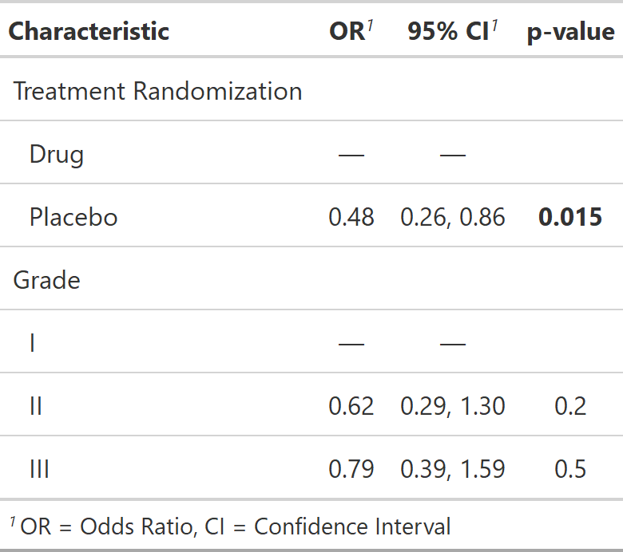

| bold_p.tbl_regression {gtsummary} | R Documentation |
Bold values below a chosen threshold (e.g. <0.05) in tbl_regression tables.
## S3 method for class 'tbl_regression' bold_p(x, t = 0.05, ...)
x |
Object created using tbl_regression function |
t |
Threshold below which values will be bold. Default is 0.05. |
... |
Not used |
A tbl_regression object

Daniel D. Sjoberg, Esther Drill
Other tbl_regression tools:
add_global_p.tbl_regression(),
add_nevent.tbl_regression(),
bold_italicize_labels_levels,
bold_p.tbl_stack(),
combine_terms(),
inline_text.tbl_regression(),
modify_header(),
sort_p.tbl_regression(),
tbl_merge(),
tbl_regression(),
tbl_stack()
tbl_lm_bold_p_ex <- glm(response ~ trt + grade, trial, family = binomial(link = "logit")) %>% tbl_regression(exponentiate = TRUE) %>% bold_p()